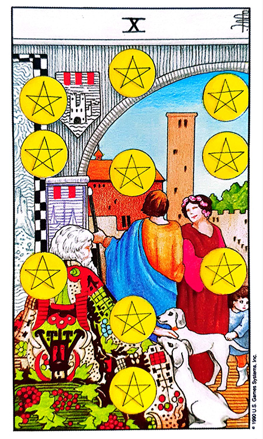

이 챕터의 표어는 “기분 좋은 날의 약속”입니다. Rainbow는 가시광선의 7색이 조화롭게 펼쳐진 최고의 축복 컬러로, 비가 온 뒤에 나타나는 신의 약속이 리딩의 최대 포인트입니다.
무지개색 Rainbow 카드
02Rainbow의 특성 ① — 신의 약속
『성경』 창세기에 따르면 인간의 타락은 하나님의 심판을 가져왔습니다. 대홍수 후에 하나님은 노아와 그의 후손들과 언약을 맺으셨고, 다시는 온 땅에 홍수가 나지 않겠다고 약속하셨습니다.
무지개는 이 언약의 표징으로 세워졌습니다.
초대 그리스도교 찬가 — 성모를 ‘하늘의 아름다운 무지개’라 노래했으며, 하느님과 인간을 이어주는 ‘무지개 다리’라고 칭송.
중세 시대 성화(聖畵) — 무지개는 그리스도와 연관을 가지며 주님의 영광스러운 다스림을 표현하는 표본이 되어 왔습니다.
신화 속 무지개 — 아이리스
예술과 문학에서 아이리스는 무지개를 타고 다니거나 이동 수단으로 사용하는 무지개 옆에 자주 묘사되었는데, 무지개의 여신 아이리스는 신과 인간의 연결을 상징하며 소통과 상호 작용의 통로 역할을 합니다.
아이리스는 신과 인간 사이에 메시지를 전달하는 중요한 역할을 했습니다. 그녀의 주요 임무는 올림포스 신들의 명령과 의지를 여러 장소에 전달하는 것이었고, 무지개를 따라 여행함으로써 그녀의 다채로운 길로 묘사되었습니다.
03☑ 신화 속 무지개 · 다리·뱀
하늘과 땅을 잇는 다리
여러 신화에서 무지개는 신(神)에 의해 만들어진 다리로 하늘과 땅을 이어주는 통로로 여겨졌습니다.
북유럽 신화 — 무지개 다리가 거인·악의 군대가 하늘 나라를 공격하는 통로로 쓰여져 무너져 내리고 이 세계가 끝이 난다고 합니다.
북아메리카 원주민(캐나다 북서부~멕시코)의 다양한 문화 — 무지개를 다리로 생각.
푸에블로족·나바호족 — 그들의 조상이 매년 겨울 무지개 다리를 타고 건너와 그들 곁에 머무른다고 믿음.
무지개 = 뱀
많은 문화권에선 무지개를 뱀으로 보기도 합니다.
고대 이집트 — ‘메헨’이라 불리는 뱀 모양의 문양과 함께 색칠된 원호. 파란색·빨간색 안료 흔적이 무지개색을 연상시킵니다.
오스트레일리아 원주민 — 남녀 양성을 가진 ‘무지개뱀’이 세계를 창조 · 물과 풍요를 담당하고 주술사에게 능력을 준다고 믿음.
아프리카 서해안 요루바족 — 무지개는 땅속에 사는 큰 뱀이 물을 마시기 위해 하늘에 나타나는 것.
북아메리카 전설 — 거대한 뱀이 나이아가라 폭포에서 떨어지는 물살에서 나와 승천 = 무지개.
남아프리카 원주민 — 한 소녀가 조그만 물뱀을 잡아 길렀는데 이 물뱀이 거대하게 자라나 인간을 잡아먹으며 세상을 돌아다니다가, 새들이 힘을 합해 죽였는데 그 피가 깃털에 묻어 새들이 저마다 다른 빛깔로 구분되게 되었다는 것.
불길한 징조로서의 무지개
북아메리카 다코타족·호피족 — 무지개를 손가락으로 가리키는 것이 금기.
유럽 — 무지개 밑을 지나가면 남녀의 성이 서로 바뀐다는 전설.
루마니아 — 무지개의 양 끝에 닿아 있는 물을 마시면 남녀의 성이 바뀐다고 합니다.
한국 — “서쪽에 무지개가 나타나면 소를 강가에 매지 말라”는 속담. 서쪽에 비가 내리고 있다는 것으로 시간이 지나면 다른 쪽에도 비가 내릴 가능성이 커, 선조들은 무지개를 보고 홍수를 예측했습니다.
한국 전설 — 선녀들이 깊은 산속 맑은 계곡에 목욕하러 무지개를 타고 지상으로 내려온다.
04☑ 색의 조화 — 뉴턴의 7음계
무지개는 비 온 뒤에 개었을 때나 비가 오기 직전 태양을 등지고 섰을 때 볼 수 있는 둥그런 띠로서 빨강·주황·노랑·초록·파랑·남색·보라가 있으나, 다른 나라에서는 무지개의 색을 다르게 분류하기도 합니다.
가시광선 영역 안에서 존재할 수 있는 색들이 혼합되어 펼쳐진 것으로, 크게 따지면 일곱 색으로 분류하였지만 사실은 그 사이사이의 무수히 많은 색이 존재합니다.
★ 뉴턴의 7음계 스펙트럼
무지개가 일곱 색이라고 알려지게 된 건 1666년 영국의 과학자 아이작 뉴턴이 스펙트럼 실험으로 찾아낸 색을 기반으로 ‘도레미파솔라시’의 7음계에 따라서 색을 나누었다는 이야기가 정설로 알려져 있습니다.
무지개의 색들은 서로 조화를 이루며 모일수록 아름다움을 연출합니다. 이 일곱 가지의 색들은 서로 간의 균형을 맞추고 있으며, 순리에 맞게 다음의 컬러로 부족하거나 남김없이 자연스레 전달하고 있으며 완벽한 조화를 이루고 있습니다.
05☑ 차크라 — 7개의 에너지 원
‘차크라’는 산스크리트어로 원 또는 원반을 뜻합니다. 차크라는 인간 몸속의 에너지 원으로서 신체적·정신적으로 몸에 흐르는 에너지의 흐름을 조절하며 생기가 흐르도록 도와주는 균형점입니다. 차크라는 척추를 따라 정수리까지 이어지며 이 길을 ‘아바두티’라 부릅니다.
색
차크라
위치
담당·부족 시
빨강
물라다라 차크라
회음부와 항문 사이
내면의 힘·몸의 가장 근원적 균형과 안정 · 부족 시 소심·두려움·자기중심적 사고
주황
스와디스차나 차크라
생식기와 배꼽 사이
창의력·통제력·감정·성적 기능 · 부족 시 감정조절과 창조성 저하·불안정한 생활
노랑
마니푸라 차크라
배꼽 위 (비장·간·위)
내면의 힘·자신감 등 긍정적 감정 · 부족 시 자존감 저하·의존적 삶
초록
아나하타 차크라
가슴 부위
물질 영역과 정신 영역·감정과 이성 사이의 연결 · 부족 시 소유욕 증가·사람 신뢰도 저하
파랑
비슈디 차크라
목 부위
생각·감정 표현·듣고 배움 · 부족 시 독선·오만·의사소통 문제
남색
아주나 차크라
눈 사이 미간
직관·통찰·영적 연결성·의식의 활성화 · 부족 시 추상 세계 몰입·타인 단점 지적
보라
사하스라라 차크라
머리끝 정수리
몸의 모든 것 주관·영적 에너지 · 부족 시 정서적 불안·자기중심
06☑ LGBTQ · 6줄 무지개기
LGBTQ는 통상적으로 레즈비언·게이·양성애(바이섹슈얼)·트랜스젠더를 말하는데, 원래 이들의 상징적인 색은 분홍색이었지만 1978년 길버트 베이커가 샌프란시스코 동성애 자유 기념행사를 위해 무지개틀을 디자인하였습니다.
이들의 무지개는 우리가 아는 무지개와는 조금 다릅니다. 여러 수평선이 겹쳐서 모양을 만드는데 다양한 색의 수평선들은 세계 동성애자들의 자부심·다양성·통합을 상징합니다.
하비 밀크 사건 → 6줄 무지개
처음에는 8가지 색으로 디자인되었지만, 1978년 11월 샌프란시스코에서 동성애자로 커밍아웃을 하고 시의원에 출마해 당선된 최초의 동성애자인 ‘하비 밀크’가 저격당해 사망하는 사건이 발생. 엄청난 충격을 받은 게이 단체들은 무너지지 않는 투지를 보여주기 위해 1979년 게이 행진을 하게 되는데, 게이 행진 위원회의 제안으로 6개의 줄무늬 무지개를 사용하게 되었습니다.
색
의미
빨강
생명
주황
치유
노랑
태양
초록
자연
파랑
예술
보라
영혼
201쪽 손글씨 스타일 주황색 텍스트: “동성애의 컬러”
07★ 핵심 원리 — 고생 끝에 낙
★ 리딩 골든룰 1 — Rainbow = “어려움 → 극복 → 축복”
하나님이 대홍수로 인간을 심판한 후에 무지개를 띄웠듯이, 무지개는 통상적으로 비가 온 뒤 나타납니다.
타로에서 무지개색이 나왔다면 어려움을 겪고 난 뒤에 좋아질 수 있다는 것입니다. (형광펜 강조)
이것은 처음의 어려움을 극복하면 미래에는 무지개를 만날 수 있다는 약속의 증표입니다.
과거에 어려움을 겪든, 현재에 어려움을 겪든 지금의 어려움을 극복한다면 미래에는 좋아질 수 있습니다.
08Rainbow 컬러의 성격 12가지
#
성격 특징
1
매력적인 사람으로 인기가 좋습니다.
2
특출난 재능은 없지만 다재다능한 사람입니다.
3
환경에 따라 대처할 수 있는 적응력이 좋습니다.
4
신용을 중요하게 생각하고 중용을 지킵니다.
5
모나지 않고 포용력이 있습니다.
6
모범적인 사람으로 정직합니다.
7
사교적이며 혼자서 외톨이로 지내는 것을 싫어합니다.
8
인정이 많고 유쾌한 사람입니다.
9
남들 앞에 나서는 것을 좋아하지는 않습니다.
10
다방면에 재능이 있으며 여러 가지를 한 번에 하길 좋아합니다.
11
디자인 센스가 있으며 미적 감각이 있습니다.
12
집중력이 부족할 수 있으며 끈기가 부족할 수 있습니다.
★ 성격 요약
“기분 좋은 날의 약속” — 매력·다재다능·적응력·포용·정직·미적 감각·사교의 조화로운 면과, 집중력·끈기 부족의 단점이 있습니다. 특출난 하나가 아니라 모든 색을 담아내는 균형이 핵심.
09♥ 타로 해석 ① — Rainbow의 연애운
카드 조합
핵심 한 줄
상세 해석

X of PENTACLES (펜타클 10) + Rainbow
위기 후 결혼·임신의 약속
연애운에서 레인보우 카드가 나왔다면 과거나 현재에 두 사람에게 큰 위기가 있었을 것입니다. 그렇지만 그 위기만 잘 넘어간다면 미래에는 아름다운 만남을 하게 될 것입니다. 미래에 대한 신의 약속의 카드입니다. 다시는 둘의 관계를 심판하지 않을 것이며 무지개빛 미래를 만들어 줄 것입니다. 곧 결혼할 수 있으며, 결혼한 부부라면 아이를 가지게 될 것입니다.
애인 질문 + Rainbow
비 오는 날 · 다른 성향의 좋은 인연
“애인을 만날 수 있을까요?” 질문이라면 지금 당장은 아니지만 미래에는 좋은 사람을 만나 행복해질 수 있습니다. 비 오는 날 만날 가능성이 있으며 나와 다른 성향의 사람이지만 서로 잘 어울리며 서로에게 좋은 만남입니다.
10💸 타로 해석 ② — Rainbow의 금전운
카드 조합
핵심 한 줄
상세 해석
V of PENTACLES (펜타클 5) + Rainbow
서서히 나아짐 · 다양성이 답
레인보우 카드가 위 카드처럼 배열되었다면 힘든 일이 있었고 현재 상황이 어렵지만 서서히 나아질 것이며 미래에는 원하는 것을 얻을 수 있습니다. 빌려준 돈이 있다면 조금씩 나누어서 받게 될 것이고, 투잡이나 쓰리잡을 하고 있다면 아직은 어려움이 있지만 곧 좋아질 것입니다. 장사를 하고 있다면 한 가지 메뉴보다는 다양한 메뉴로 하는 것이 도움이 될 것입니다.
11📈 타로 해석 ③ — Rainbow의 매매운 · 합격운
카드 조합
핵심 한 줄
상세 해석
III of PENTACLES (펜타클 3) + Rainbow
틀어졌던 거래 재성사 · 협업
레인보우 카드가 매매운에서 나왔다면 한번 거래가 틀어졌던 사람과 매매가 다시 성사될 수 있으며, 그 사람이 아니더라도 좋은 조건에서 매매가 이뤄질 것입니다.
+ Rainbow (합격운)
재도전 합격 · 함께 준비
합격운이라면 과거에 떨어졌던 경험이 있거나 모의고사에서 좋지 않은 성적으로 걱정을 하고 있겠지만, 이번 시험에는 합격될 가능성이 큽니다. 혼자 공부하기보다는 주변 사람들과 함께 준비하고 도움을 받을 수 있다면 더욱 좋습니다.
12🏢 타로 해석 ④ — Rainbow의 사업운 · 진로 · 건강
Rainbow 컬러의 사업운
★ 리딩 골든룰 2 — 다양성이 답
사업운에서 레인보우 카드가 나왔다면 과거나 현재에는 어려움이 있었겠지만 문제들은 해결되고 서서히 좋아질 것입니다.
거래처와 문제가 있었다면 다시 원만하게 해결될 것이며, 막혔던 자금줄도 곧 해결될 것입니다.
사업의 아이템은 다양할수록 좋으며, 다양한 사람들을 대상으로 하는 사업도 좋습니다. Beauty 업종이나 다문화 업종도 좋습니다.
Rainbow 컬러의 진로 적성
이 색은 신뢰를 바탕으로 한 직업이나 미(美)적 재능을 살리는 진로 적성이 좋아 보입니다.
 V of PENTACLES (펜타클 5) + Rainbow
V of PENTACLES (펜타클 5) + Rainbow